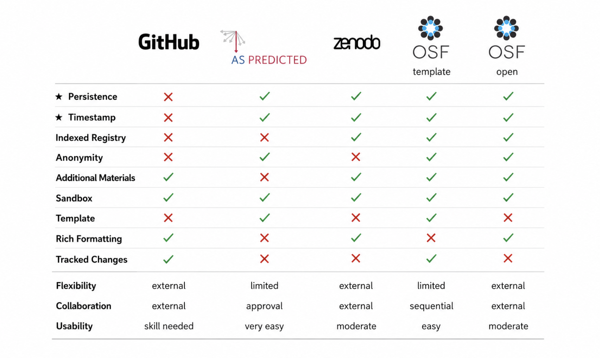

Chapter 2: Preregistration and Open Protocols
Authors: Nadza Dzinalija, Eva van Heese, Lucas Baudouin; Reviewers: Juliette Castelot, Dorien Maas
This chapter...
- explains the main goal of preregistration;
- debunks common fears relating to preregistration;
- provides pros and cons of writing a preregistration;
- explains the different types of preregistrations;
- describes platforms to publish a preregistration;
- lists essential elements to include in a preregistration;
- outlines approaches to share lab protocols;
- explains how to search for lab protocols in repositories.
1. The Preregistration Revolution
Progress in scientific studies relies on two processes: prediction and postdiction. Prediction involves the generation of hypotheses from existing data (exploratory), and postdiction includes testing hypotheses with new data (confirmatory). The same data cannot be used to do both, but this can happen unintentionally as the distinction between the two is generally appreciated on a conceptual level, but not always respected in practice. The blurring between prediction and postdiction reduces the credibility of research as natural biases in human reasoning (i.e. the hindsight bias) are difficult to avoid. For example, a researcher may collect data on the effectiveness of an intervention, and after half the data is collected, perform a preliminary analysis that shows the intervention is effective only in one subgroup of patients. When all the data is collected, the researcher may focus on this subgroup of patients and do post-hoc analyses in this group, despite not having had a hypothesis about this subgroup before seeing the data at the half-way point. In this way, the same data (or a part of it) is used for both generating the hypothesis and testing that same hypothesis.
Research ideas and hypotheses should be defined before observing outcomes to keep a clear separation between prediction and postdiction. This is the main aim of preregistration.
Preregistration is the practice of registering research questions and hypotheses, as well as the analysis plans before or during a study. Preregistration helps researchers to distinguish between conclusions based on exploratory and confirmatory investigations. Preregistrations can be made for a variety of practical set-ups, for example, when data already exists or for new studies.
Widespread adoption of the practice of preregistration will increase the distinction between hypothesis-generating and hypothesis-testing research and improve the credibility of science.
2. Common Fears Debunked
Many researchers have concerns or misconceptions about preregistration that hold them back in publishing a preregistration. Understanding the facts can help overcome these fears and highlight the true benefits of preregistering your research.
- Fear of being scooped
This concern is common but often overstated. Preregistration timestamps your ideas, establishing clear priority. Additionally, many platforms let you keep your preregistration private under an embargo until you’re ready to share publicly, protecting your work while you proceed.
- Fear of losing flexibility and limiting exploratory analyses
Preregistration doesn’t lock you into rigid plans. It allows transparent reporting of any changes or new analyses. This approach clarifies what was planned versus what emerged during the study, supporting both confirmatory and exploratory work without limiting creativity.
- Fear of additional work that slows down research
While preregistration requires upfront effort, it often streamlines the research process by improving planning and reducing duplicated efforts. The initial time investment can save time later by making analysis and reporting clearer and more efficient. The first time can feel a bit tough, but the easiest way to understand its value is to jump in and give it a shot!
3. Pros and Cons
Writing a preregistration comes with pros and cons. The table below sets out the most essential points to consider.
| Pro | Con |
|---|---|
| Separates hypothesis-generating and hypothesis-testing research → improves the credibility of your research | Takes time and additional preparation |
| Improves transparency of your research (avoids duplicate studies, reinventing the wheel, making the same mistakes as others) | Creates additional work if plans change later (changes need to be reported) |
| Improves efficiency and planning of your research | |
| Improves the quality of your research | |
| Aids in clearly reporting your research | |
| Can help when publishing null results |
4. Practical Decisions
4.1) Who can publish a preregistration?
Anyone! Whether you are an undergraduate student, PhD candidate, postdoctoral or more senior researcher, you can write and publish a preregistration. Regardless of whether the final product of your research will be published in a scientific journal, your analysis plan can be described and published beforehand.
4.2) Types of preregistrations
There are a few main types of preregistrations:
- Basic preregistration
This is the most used preregistration and it is not peer-reviewed before submission. Here, you create a detailed description of your research plans before you begin your research and save them in an online repository that has a timestamp and is no longer editable after submission. You can also put an embargo date on your submission so that it only becomes widely available after a desired period of time has passed.
- Secondary data preregistrations
This is a variant of the first preregistration, where a preregistration of analyses plans is made after the data has already been collected but before analyses have been done. This form of preregistration is applied when you are using an existing dataset (for example an open dataset) for new analyses.
- Registered report
This type of peer-reviewed preregistration is done in collaboration with a journal. Note that only some journals offer this, for instance Imaging Neuroscience (see a comprehensive list of participating journals here). In a registered report, you follow similar steps as above and your preregistration is subsequently subjected to a peer-review process, whereby the journal pledges to publish your findings regardless of the outcome if they accept your preregistration.
4.3) Platforms
Several preregistration platforms exist, each with its own (dis)advantages (see Figure 2.1 for an overview). These platforms are not specific to neuroscience and can be used across a wide range of scientific disciplines. A personal account is required to view the available templates and select one for your preregistration. It is generally possible to invite future co-authors to collaborate on a pre-registration, allowing you to collect input from important stakeholders in the research.
- Open Science Framework
- AsPredicted
- Zenodo
- GitHub

Figure 2.1 - Comparisons of preregistration platforms (modified from Haroz, 2022). ★ = the criteria deemed to be a bare minimum to meet the definition of a preregistration.
5. Essential Elements
It is essential to include all confirmatory analyses in your preregistration. This will look different for every study, so a good rule of thumb is to imagine you were writing the method section of your paper and include anything that you would typically include there. Among others, you can consider including:
-
Study population: inclusion/exclusion criteria; if data has already been collected, include demographics like age and sex.
-
Materials: how concepts were operationalized or quantified, what cut-offs or criteria were used in the process. It is essential to list all measures taken, not only the ones you plan to use for your analyses. For example, a study may have incorporated multiple questionnaires, but you may focus on just one for your analysis - you should still list all the questionnaires participants completed. If you pick one outcome measure over another similar measure, explain how/why you operationalized it that way. For example, you may have multiple items on a questionnaire that measure a construct like ‘quality of life’, or you may have two timepoints at which you assess treatment effects - be specific about which you use as your outcome measures and why you selected that measure.
-
Methods: procedures followed; if you have a Standard Operating Procedure (SOP) for your study this can serve as an excellent basis for this section.
-
Processing (optional, if relevant): the software and tools (and links to their resources) you will use to process the acquired data, versions and required packages, parameters and predefined cut-offs, guidelines for quality control.
-
Analyses: specific statistical tests you will run; the (in)dependent variables and how these are obtained; the inference criteria you will use from those tests. If multiple testing problems may occur, mention how you correct for those. Also report any sensitivity analyses you plan to perform.
-
Hypotheses: depending on the nature of the research, you may consider formulating a hypothesis for each analytic test you plan to do. This may be appropriate when there is substantial prior research that specifies a direction of effects (e.g, higher values in patients than controls). Alternatively, there may not be sufficient prior work on which to base your hypotheses, in which case you might adopt a hypothesis-free approach to avoid experimenter bias. A case where this is applicable may be a machine learning analysis where you allow an algorithm to ‘solve’ a particular problem, for instance by using factor analysis to create subgroups of patients. There may be sub-hypotheses under larger hypotheses when there are multiple groups to capture the relationships between all groups. If you base your hypotheses on previous literature, be sure to cite the relevant sources. This can be done in a brief introduction at the start of the preregistration.
-
Power analysis: if a power analysis was done, report it, otherwise, report what power you infer post-hoc from the sample you already have.
It is not essential to include exploratory analyses when you do not (yet) have a clear idea of what you will test or what results you may expect. Consider including any additional analyses you know you want to perform. The rules are not so strict as they are for confirmatory analyses, so if it is not yet clear how you will define a particular variable, or if you need to see whether specific patterns emerge from the data before you do a particular test, that can be described here. It is encouraged but not always necessary to describe the statistical analyses and hypotheses for exploratory analyses in detail. There isn’t always a clear distinction between ‘exploratory’ and ‘confirmatory’ research, and for your own study, you are responsible for where you draw the line.
6. Publishing after Preregistration
After you’ve completed your preregistered study and gathered your results, it’s important to share what you found, even if the outcomes are null, unexpected, or not as exciting as hoped.
As you prepare a manuscript to report your preregistered research, here are a few key things to keep in mind:
- Include a link to your original preregistration in your manuscript or report.
- Be clear and honest about any deviations from your preregistered plan.
- Report the results of all preregistered analyses, not just those with significant or interesting outcomes.
7. Open Protocols
We have all faced the dilemma of who to seek advice from when we wish to test a particular antibody or protocol that we have encountered in a publication. Regrettably, we may not have anyone in our circle of colleagues who can provide the guidance we need, and we may end up conducting a series of fruitless trials before arriving at a definitive outcome. However, as fate would have it, we may later stumble upon a protocol that could have spared us valuable time and resources. This situation is not uncommon, and open protocols and sharing of negative results could remedy this (see more in Chapter 5). This section focuses on protocol sharing, as protocols serve as the foundation of many research projects but are not typically featured in scientific publications.
- eLab Journal: eLab is a collaborative, digital lab-management environment that allows documenting research workflows, protocols, and other important laboratory information. It may seem obvious, but more and more institutions are transitioning from the paper lab notebook to the digital lab notebook, enabling information sharing within a group or a department. eLab journals are the first source of information for anyone in search of a protocol. However, this manner of sharing remains limited and cannot be extended to an entire community.
- Community: When expertise is unavailable in your lab, the first source of mutual help is usually online communities such as Researchgate. Created in 2008, this site brings together researchers' protocols through discussions, where mutual help is the watchword. All scientific disciplines are represented allowing for cross-disciplinary exchanges.
- Education materials: Another useful resource for gaining a deeper understanding of theoretical concepts and their practical application is online course materials. Typically, these materials are designed to help avoid potential pitfalls rather than presenting detailed procedures. A comprehensive overview of such examples can be found at EMBL-EBI Training.
- Peer-reviewed journals: There are protocols published in the methods section of peer-reviewed articles. While publications’ methods sections provide an overview of experimental conditions and references to the products used, they do not usually provide detailed protocols, limiting the ability of other researchers to replicate experiments. To address this, some journals specialize in transparency and method sharing, such as Cold Spring Harbor Protocols, Nature Protocols, and Jove. Jove is distinctive in offering a wide range of multi-disciplinary methodological videos, from molecular to macroscopic analysis, including MRI. These journals have an open access policy, but it is not universal to all publications, meaning full access to their catalogue of articles/videos is impossible.
- Open Access Journals: To address this accessibility difficulty, it is recommended to identify scientific journals that focus on disseminating experimental protocols that are entirely freely accessible. A noteworthy illustration of such a publication is the STAR (Structured Transparent Accessible Reproducible) Protocols journal, published by Cell Press. This journal offers a comprehensive selection of methods, presented step-by-step, with the significant advantage of having been subjected to peer review.
An additional option is to search for protocols in open-access repositories. These archives allow open sharing, with no peer-review procedure and no costs for publication or registration. Another advantage is that the articles made available are assigned a DOI for citation purposes and published under a CC-BY licence. This means that anyone is free to reuse these methods. Two major players are currently involved in these types of procedures: protocol.io and Protocol Exchange. Importantly, several publishers are working in collaboration with protocol.io to make more detailed protocols from their articles available, as is the case with the Lab Protocols initiative launched by Plos One and Nature Protocols.
References
Haroz, S. (2022). Comparison of Preregistration Platforms [Preprint]. MetaArXiv. https://doi.org/10.31222/osf.io/zry2u
Nosek, B. A., Ebersole, C. R., DeHaven, A. C., & Mellor, D. T. (2018). The preregistration revolution. Proceedings of the National Academy of Sciences, 115(11), 2600-2606. https://doi.org/10.1073/pnas.1708274114